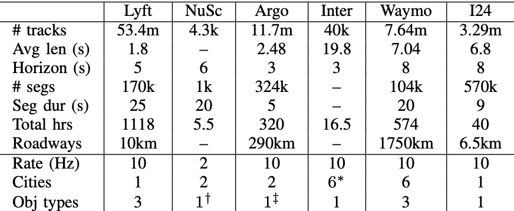

- 1 MIT
- 2 Vanderbilt
- 3 NVIDIA

Accurately modeling individual vehicle behavior in microscopic traffic simulation remains a key challenge in intelligent transportation systems, as it requires vehicles to realistically generate and respond to complex traffic phenomena such as phantom traffic jams. While traditional human driver simulation models like the Intelligent Driver Model offer computational tractability, they do so by abstracting away the very complexity that defines human driving. On the other hand, recent advances in infrastructure-mounted camera-based roadway sensing have enabled the extraction of vehicle trajectory data, presenting an opportunity to shift toward generative, agent-based models that learn to reproduce driving behaviors directly from data. Yet, a major bottleneck remains: most existing datasets are either overly sanitized or lack standardization, failing to reflect the noisy, imperfect nature of real-world sensing. Unlike data from vehicle-mounted sensors—which can mitigate sensing artifacts like occlusion through overlapping fields of view and sensor fusion— infrastructure-based sensors surface a messier, more practical view of challenges that traffic engineers face every day. To this end, we present the I-24 MOTION Scenario Dataset (I24-MSD)—a standardized, curated dataset designed to preserve a realistic level of sensor imperfection, embracing these errors as part of the learning problem rather than an obstacle to overcome purely from preprocessing. Drawing from noise-aware learning strategies in computer vision, we further adapt existing generative models in the autonomous driving community for I24-MSD with noise-aware loss functions. Our results show that such models outperform traditional baselines in terms of simulation realism.
Existing human driver models are simplified ODEs that neglect the interactions between vehicles (except the leading vehicle), roadway structure, and signage. With greater availability of data, we revisit data-driven approaches. We propose approaching the microscopic traffic simulation problem with generative modeling.

We see similarities between the microscopic traffic simulation problem and the autonomous vehicle traffic simulation problem of simulating the behavior of human drivers around the autonomous vehicle to help plan ego vehicle motion. Generative modeling has already been applied to tackle this problem within the AV space, enabled by data made available in well-formatted benchmarks. A key difference between the AV problem and microscopic traffic simulation, where infrastructure-based sensors deployed across larger stretches of highway is the presence of noise. There are many sources of noise from occlusion, jittering, etc. that makes including an error a necessary consideration and requires us to consider it as part of the problem.

A key difference between the AV problem and microscopic traffic simulation is the presence of noise in data gathered from infrastructure-based sensors deployed across larger stretches. There are many sources of noise from occlusion, jittering, etc. that makes including an error a necessary consideration and requires us to consider it as part of the problem.
We introduce the I-24 Motion Scenario Dataset, designed to provide a realistic representation of traffic scenarios, incorporating the noise and imperfections inherent in real-world data collection. By embracing these challenges, we aim to improve the robustness and applicability of generative models in traffic simulation.
The I-24 Motion Dataset (I24-MSD) is a standardized dataset based on Interstate 24 in Nashville, Tennessee, and designed to advance generative microscopic traffic simulation. It contains over 3.29 million vehicle trajectories with a total duration of 40 hours of driving across 6.5 km of interstate, presented as 9-second-long traffic scenarios, each with up to 32 vehicles.
Below is a table comparing I24-MSD (referred to as I24) with other datasets. Data for other datasets is compiled directly from Ettinger et al.
To tackle our problem, we look at optimizing generative models for microscopic traffic simulation with noise-aware loss functions. We adapted the state-of-the-art SMART model from the AV traffic generative modeling to our problem.
Below in Table 2 we summarize the performance evaluation results with standard metrics from AV simulation. We have two baselines, Intelligent Driver Model (IDM) and Constant Velocity, which we compare SMART and SMART with various noise-aware optimization techniques against. We see that SMART variants outperform the two baselines overall and the SMART with cross-entropy and label smoothing performs the best overall.
@misc{jayawardana2025noiseawaregenerativemicroscopictraffic,
title={Noise-Aware Generative Microscopic Traffic Simulation},
author={Vindula Jayawardana and Catherine Tang and Junyi Ji and Jonah Philion and Xue Bin Peng and Cathy Wu},
year={2025},
eprint={2508.07453},
archivePrefix={arXiv},
primaryClass={eess.SY},
url={https://arxiv.org/abs/2508.07453},
}
|
|